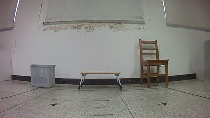

🧬 A3 계열 진화 계보: a3 → a3-s2 → a3-ag23 → MOD-DR-Fast/Safe
300에피소드 바구니 데이터(PiZeroFM(12,768))에서 출발해 중앙 비출발 문제와 근접 미정지(접촉 6건)를 단계적으로 해결하고, beam=1 fp16(285ms) 및 YahBoom 이식으로 EGVLA2를 완결한 전체 계보. · 생성 2026-11-25 21:17 KST
1. 왜 이렇게 진화했는가? (Causal Flow & ag23 명명 의도)
각 세대는 이전 실기 주행에서 드러난 단 하나의 명확한 병목을 겨냥해 설계되었다.
① EG2-9 (a3) — 기준선
실기 2026-10-29 ~ 11-13
설계: Florence-2 BBox 중심(cx)과 조향(linear_y)을 기하 서보로 정합(시드 0).
성과: 학습 물체인 바구니 실기 455/455 안정 추종.
발견된 문제: 11/13 의자 중앙에서 0/5 비출발(768-d 시각 지름길 과적합, 시각 셔플 뒤집힘 27.4%).
② EG2-14 (a3-s2) — 시드 전환
실기 2026-11-16 (45/45)
변경: a3와 동일한 아키텍처·레시피에서 랜덤 시드만 0→2로 변경.
성과: 11/16 실기에서 의자·책상 중앙 출발 5/5 (100%) 즉시 복구.
발견된 문제: 정지 라벨이 기하 면적과 묶이지 않아 근접 정지 55%/28%(area 0.25~0.40 12~22%), 실기 접촉 6건.
③ EG2-16 (a3-ag23) — 기하·시각 완결
오프라인/GPU 검증
변경: 정지 면적 0.23 기하 정합(area≥0.23) + 시각 특징 50% 교체.
성과: 중앙 100% · 근접 정지 90%/93% · T7 각도 0.54°(좌우 98.7%) · 시각 셔플 뒤집힘 0.0% · S_area=+100.0%p.
남은 숙제: beam=3 fp32(590.7ms) 지연 병목 및 실기 주행 미검증.
④ EG2-17 (MOD-DR-Fast/Safe) — 서빙 완결
GPU 종단 서빙
변경: a3-ag23 위에 beam=1 fp16 + S2 연속 감속(0.14→0.25) + 스파이크 필터(2.5x) 결합.
성과: 종단 지연 590.7ms → 285.3ms (2.09x), Serbot → YahBoom 카 이식(EGVLA2 엔딩).
이후 방향: 오픈보캡 실기·멈춤 문구 E2E는 EGVLA3(EG3-11)로 분리 진행.
a3-ag23 인가?•
a3: Architecture 3 (PiZeroFM(12,768) 기반 모듈러 Flow-Matching 계열) · s2: Seed 2•
ag23: Area-Grounded 0.23 — 기존 a3가 조향(cx)만 기하에 정렬해 근접 시 충돌하던 문제를 풀기 위해, 정지(STOP) 기준을 바운딩박스 면적 임계값 area ≥ 0.23에 기하학적으로 정렬(Area-Grounded)하고 시각 특징 50% 교체로 배경 편향을 끊은 모델이라는 의미다.
2. 세대별 구조·학습·성능 정밀 비교표
| 세대 (ID / 별칭) | 검증 구분 | 핵심 변경점 | 정량 지표 (출발 / 정지 / 조향 / 속도) | 해결점 vs 남은 과제 |
|---|---|---|---|---|
EG2-9 (a3)MOD-A3 |
실기 완료 2026-10-29~11-13 |
조향(cx)만 기하 서보 정합, 시드 0, beam=3 fp32 |
• 바구니 실기 455/455 • 11/13 의자 중앙 0/5 • 11/16 근접 정지 80%/58% • 지연 590.7ms |
바구니 주행 안정적이나 시각 지름길(뒤집힘 27.4%)로 낯선 물체 중앙 비출발. |
EG2-14 (a3-s2)MOD-A3-s2 |
실기 완료 2026-11-16 (45/45) |
a3와 동일 레시피 · 시드 0→2 |
• 의자·책상 중앙 5/5 (100%) • 11/16 근접 정지 55%/28% • T7 각도 0.70° |
중앙 출발 해결, 그러나 근접 정지 약화로 실기 접촉 6건 발생. |
EG2-16 (a3-ag23)MOD-A3-AG |
오프라인/GPU 2026-11-21 |
정지 면적 0.23 기하 정합 + 시각 특징 50% 교체 |
• 중앙 100% · 근접 정지 90%/93% • T7 0.54° (좌우 98.7%)• 셔플 뒤집힘 0.0% |
실기 주행 미검증 + beam=3 지연(590.7ms) → MOD-DR-Fast/Safe로 해결. |
EG2-17 (MOD-DR-Fast/Safe)EGVLA2 최종 서빙 |
GPU 종단 서빙 2026-11-24 |
a3-ag23 + beam=1 fp16 + S2 감속(0.14→0.25) + 스파이크 필터(2.5x) |
• 종단 지연 285.3ms (2.09x) • beam=3 일치율 99.7% (cx MAE 0.0016) |
soda 인박스 전달 완료(SHA256 9/9 OK). Serbot→YahBoom 실기 이식 대기. |
3. 실제 실기 촬영 사진(날짜·시각) 위 A3 3세대 행동 비교
범례: 회색=a3 · 주황=a3-s2 · 초록=a3-ag23 · 원(○)=STOP (각 사진은 실기 날짜·시각이 기록된 프레임 위 오프라인 추론 재생)

go to the brown wooden chair · F2 BBox: cx=0.49, area=0.06| EG2-9 (a3) | [+0.037, -0.020] | STOP |
| EG2-14 (a3-s2) | [+0.381, -0.026] | GO |
| EG2-16 (a3-ag23) | [+0.679, -0.015] | GO |
a3는 768-d 시각 지름길 때문에 정지(실기 0/5). a3-s2와 a3-ag23은 정상 직진 출발.
go to the gray basket · F2 BBox: cx=0.62, area=0.36| EG2-9 (a3) | [+0.100, +0.035] | STOP |
| EG2-14 (a3-s2) | [+0.246, +0.064] | GO |
| EG2-16 (a3-ag23) | [+0.010, -0.003] | STOP |
a3-ag23은 정확히 STOP(90%)하지만, a3-s2는 계속 전진(11/16 접촉 6건의 원인).
go to the brown wooden chair · F2 BBox: cx=0.76, area=0.36| EG2-9 (a3) | [+0.213, +0.094] | GO |
| EG2-14 (a3-s2) | [+0.398, +0.132] | GO |
| EG2-16 (a3-ag23) | [+0.022, -0.005] | STOP |
a3-ag23은 미학습 의자에서도 면적 기하 정합(area≥0.23)으로 정확히 STOP(93%).
go to the small desk · F2 BBox: cx=0.48, area=0.04| EG2-9 (a3) | [+0.149, -0.018] | STOP |
| EG2-14 (a3-s2) | [+0.319, -0.030] | GO |
| EG2-16 (a3-ag23) | [+0.709, -0.038] | GO |
a3는 비출발(STOP)로 멈추지만, a3-s2와 a3-ag23은 정상 직진 출발.
go to the gray basket · F2 BBox: cx=0.28, area=0.03| EG2-9 (a3) | [+0.413, -0.119] | GO |
| EG2-14 (a3-s2) | [+0.331, -0.173] | GO |
| EG2-16 (a3-ag23) | [+0.642, -0.319] | GO |
a3·a3-s2·a3-ag23 모두 좌측으로 일관되게 조향(T7 0.54°).
flower pot · F2 BBox: cx=0.49, area=0.01| EG2-9 (a3) | [+0.210, -0.002] | GO |
| EG2-14 (a3-s2) | [+0.362, -0.020] | GO |
| EG2-16 (a3-ag23) | [+0.672, -0.017] | GO |
a3-ag23이 바구니와 동일하게 안정적 직진 출발.4. 과적합 정밀 감사 (A3 계열) & 디코더 추론 속도 개선
| 모델 | 출발 격차 (바구니 vs 의자) | 정지 격차 (바구니 vs 의자) | 시각 셔플 (각도 / 뒤집힘) | 기하 반응성 (S_cx / S_area) | 감사 판정 |
|---|---|---|---|---|---|
| MOD-A3 (a3 · 현 배포) | 89.5% vs 0.0% 격차 89.5%p |
75.0% vs 46.5% 격차 28.5%p |
4.4° / 27.4% | +24.0° / +2.7%p |
과적합/지름길 존재 |
| MOD-A3-s2 (a3-s2 · 11/16실기) | 98.5% vs 100.0% 격차 1.5%p |
55.0% vs 30.2% 격차 24.8%p |
1.2° / 11.0% | +21.8° / -0.3%p |
부분 일반화 |
| MOD-A3-AG (a3-ag23 ★) | 97.1% vs 100.0% 격차 2.9%p |
90.0% vs 93.0% 격차 3.0%p |
0.2° / 0.0% | +20.4° / +100.0%p |
과적합 없음 (기하 일반화 우수) |
MOD-DR-Fast/Safe):
beam=3 fp32 (590.7ms) → beam=1 fp16 (순수 디코더 283.0ms, 종단 서빙 285.3ms, 2.09x 가속), beam=3 대비 중심점 오차 cx MAE = 0.0016 (99.7% 일치).
5. 2026-11-25 MOD-DR-Safe 실기 검증 (45/45 100% · 접촉 0건)
soda Serbot에 A3C_AG23_s0.pt + beam1_fp16 + S2 연속 감속(0.14→0.25) + 스파이크 필터(2.5x)를 적용한 MOD-DR-Safe 실기 주행 45세션(바구니 30 + 의자 15) 전수 분석 결과다.
0.25) 전 area=0.238에서 선제 정지| 대상 (세션 수) | 최종 정지 면적 (중앙값) | 모델 첫 idle 면적 | near_goal 면적 | 접촉(≥0.50) / 충돌(≥0.90) | 실기 지연 (중앙값) |
|---|---|---|---|---|---|
| 바구니 (30세션) | 0.295 | 0.237 (30/30) | 0.293 | 0건 / 0건 | 396.5 ms |
| 의자 (미학습) (15세션) | 0.287 | 0.239 (15/15) | 0.287 | 0건 / 0건 | 410.8 ms |
area) · Y축: 속도 크기 (model_magnitude vs S2 적용 유효 속도)
0.14→0.25)을 별도로 만들어 놓았는가?
① 물리 관성 선제 제동: a3-ag23의 학습 감속 구간(0.18→0.23)만으로는 제동 거리가 짧아, 0.14부터 미리 속도를 줄여 실기 관성 충돌을 차단합니다.
② 모델 무관 안전 계층(Safety Layer): a3-s2나 V4처럼 감속 학습이 안 된 체크포인트에서도 코드 수정 없이 재사용 가능한 독립 안전장치입니다.
③ 2중 보증: 오늘 11/25 실기에서도 [0.14, 0.18) 구간에서 S2가 먼저 0.739→0.657로 낮춘 뒤 모델 자체 감속(0.544→0.236→0)과 결합해 접촉 0건을 달성했습니다.
1. 모델 선제 정지 확인 (45/45, 100%): 바구니(
0.237)와 의자(0.239) 모두 컨트롤러(near_area=0.25)가 개입하기 직전에 a3-ag23 모델 자체가 학습 기준(area=0.23)에 맞춰 먼저 idle 정지를 출력했습니다.2. 물체 크기 차이: 의자는 바구니보다 실제 폭·높이가 훨씬 크기 때문에, 똑같이 화면의 23.9%(
0.239)를 차지해도 바구니보다 물리적으로 더 먼 거리에서 정지 면적에 도달합니다.3. 파라미터 주의점:
near_area를 0.23보다 낮추면 오히려 더 멀리서 끊기므로, 현 상태(45/45 100% · 접촉 0건 · 미학습 의자 자율 정지)로 EGVLA2 실기를 완료하는 것이 가장 타당합니다.

idle 정지 면적: 0.235 → 최종 정지 면적: 0.282 (지연 463.7ms · 26 steps)
idle 정지 면적: 0.239 → 최종 정지 면적: 0.302 (지연 398.1ms · 29 steps)
idle 정지 면적: 0.237 → 최종 정지 면적: 0.297 (지연 397.0ms · 29 steps)
idle 정지 면적: 0.237 → 최종 정지 면적: 0.284 (지연 418.4ms · 37 steps)
idle 정지 면적: 0.252 → 최종 정지 면적: 0.301 (지연 410.8ms · 20 steps)
idle 정지 면적: 0.236 → 최종 정지 면적: 0.28 (지연 409.6ms · 23 steps)